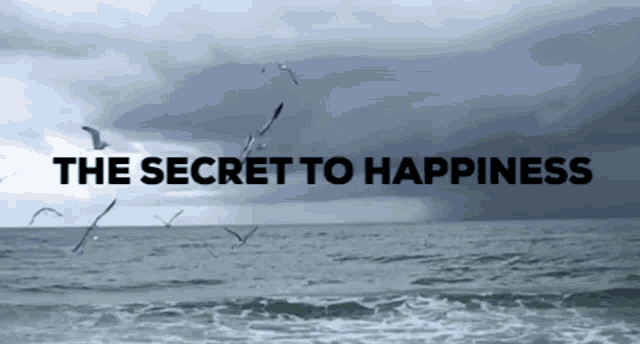

| Home | About Me | Experience | The Quotes | Contact Me |
My Qoutes
Life brings us as many joyful moments as it does downfalls, and although there are days we wish there was a manual to follow, it simply wouldn’t be the same without the spontaneity. The journey of life may not become easier as we grow older, but we do seem to understand it better as our perspectives evolve.

If life were predictable it would cease to be life, and be without flavor
If you look at what you have in life, you'll always have more. If you look at what you don't have in life, you'll never have enough.
If you set your goals ridiculously high and it's a failure, you will fail above everyone else's success,
Life is what happens when you're busy making other plans.

For everything that is really great and inspiring is created by the individual who can labour in freedom.
For to be free is not merely to cast off one’s chains, but to live in a way that respects and enhances the freedom of others,
As soon as we left the ground, I knew I myself had to fly,
No one outside ourselves can rule us inwardly. When we know this, we become free.